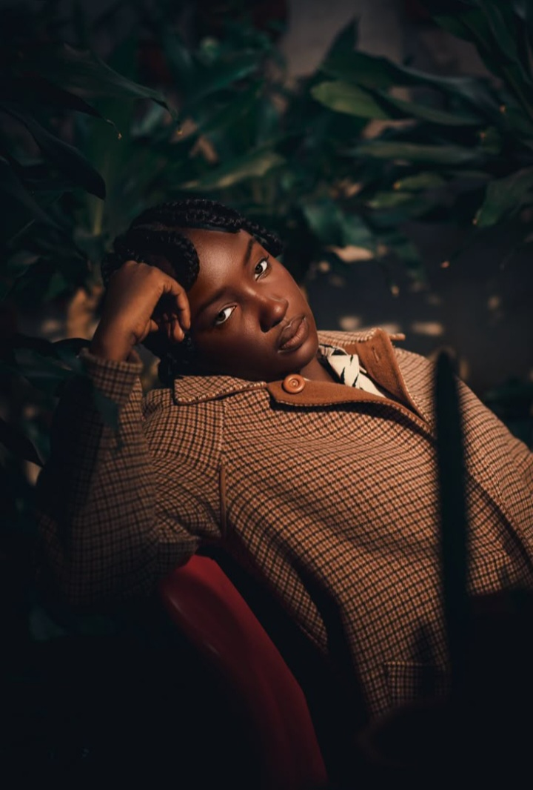

Behind the name neddy_shot_it is a young creative who believes every moment has a story worth capturing. I’m passionate about photography because it allows me to freeze time and turn ordinary moments into something powerful and memorable. From smiles and emotions to light and atmosphere, I focus on the small details that bring a photo to life. My work is all about storytelling—capturing real people, real feelings, and real experiences. With every shot, I aim to create images that speak louder than words and stay in memory long after the moment has passed.

Email: buabengkonaduedward80@gmail.com
WhatsApp: +233 530 768 943
Instagram: @neddy_shot_it